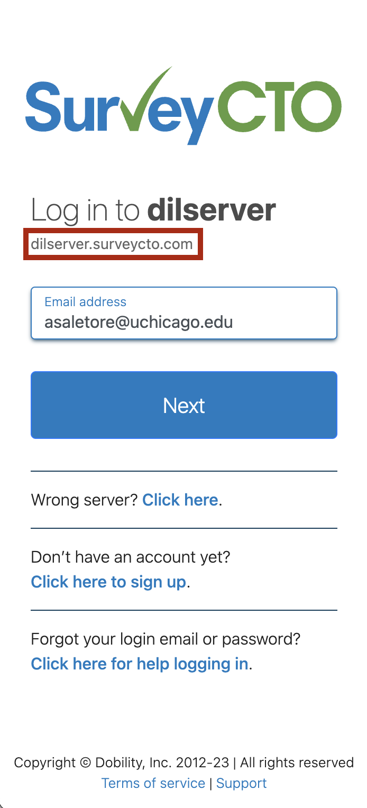

<div id="left"> <img src="img/DIL_logo_safespace_RGBFull Color.svg" alt="DIL logo" width="400"> </div> <h1>Survey CTO</h1>
## Session description - What is SurveyCTO and why do we use it? - How do you set up a SurveyCTO server? - How do you design a SurveyCTO form? - What are some best practices? - Where can I get help?
## What is SurveyCTO and why do we use it?
<p style="text-align: left;">SurveyCTO is a collection platform based on the ODK open source language. It is widely used to collect data on the field because of its:</p> 1. <span style="font-weight: bold; color: #FBA320;">Security:</span> you can encrypt your forms 2. <span style="font-weight: bold; color: #FBA320;">Reliability:</span> you can collect data without internet on the field using tablets, smartphones or computers 3. <span style="font-weight: bold; color: #FBA320;">Support:</span> SurveyCTO has an extended blog and a support team that is available 24/7 4. <span style="font-weight: bold; color: #FBA320;">Credibility:</span> large number of institutions work with SurveyCTO 5. <span style="font-weight: bold; color: #FBA320;">User-friendliness:</span> the ODK language makes it easy to design a form and monitor your data collection in realtime
## How do you set up a SurveyCTO server?
<h2>How do you set up a SurveyCTO server?</h2> <ul> <li class="fragment fade-in">DIL has its own server: <a href="mailto:dilserver@uchicago.edu">dilserver@uchicago.edu</a></li> <li class="fragment fade-in">You will need to access it using your cnet id</li> <li class="fragment fade-in"><a href="mailto:luizaandrade@uchicago.edu">Luiza</a>, <a href="mailto:asaletore@uchicago.edu">Akanksha</a>, or <a href="mailto:srestrepot@uchicago.edu">Sara</a> can help add your team/ project to the DIL server</li> </ul> --- ## [SurveyCTO](https://dilserver.surveycto.com/index.html) login page 
## How do you create a survey in SurveyCTO?
<h2>How do you create a survey in SurveyCTO?</h2>
## How do you design a SurveyCTO form?
<h2>How do you design a SurveyCTO form?</h2> <div class="fragment fade-in"> <p style="text-align: center;"> Today we will use <a href="https://docs.google.com/spreadsheets/d/1A2kDL6F5ad3RNTEioQWhrZYS-rwJLKwQKDDFc-j3tac/edit#gid=1900307175">this survey form</a> as an example </div> </p>
<h2>Form Design - sheets</h2> <li class="fragment fade-in" style="text-align: left;">survey</li> <li class="fragment fade-in" style="text-align: left;">choices</li> <li class="fragment fade-in" style="text-align: left;">settings</li> <li class="fragment fade-in" style="text-align: left;">help-</li>
<h2>Form Design - survey sheet</h2> <div class="container"> <div class="col"> <h3><span style="font-weight: bold; color: #FBA320;">Primary columns</span></h3> <li class="fragment fade-in" style="text-align: left;">type</li> <li class="fragment fade-in" style="text-align: left;">name</li> <li class="fragment fade-in" style="text-align: left;">label</li> <li class="fragment fade-in" style="text-align: left;">constraint</li> <li class="fragment fade-in" style="text-align: left;">relevance</li> </div> <div class="col"> <h3><span style="font-weight: bold; color: #FBA320;">Secondary columns</span></h3> <li class="fragment fade-in" style="text-align: left;">hint</li> <li class="fragment fade-in" style="text-align: left;">required</li> <li class="fragment fade-in" style="text-align: left;">calculation</li> <li class="fragment fade-in" style="text-align: left;">appearance</li> <li class="fragment fade-in" style="text-align: left;">disabled</li> </div> </div>
<h2>Form Design - choices sheet</h2> <ul> <li class="fragment fade-in" style="text-align: left;">list_name</li> <ul> <li class="fragment fade-in" style="text-align: left;">No spaces</li> <li class="fragment fade-in" style="text-align: left;">Same list can be used in multiple questions</li> </ul> <li class="fragment fade-in" style="text-align: left;">value</li> <ul> <li class="fragment fade-in" style="text-align: left;">Can take text and numbers, but good to use numbers only</li> <li class="fragment fade-in" style="text-align: left;">Standardise "other" and "don't know" options</li> </ul> <li class="fragment fade-in" style="text-align: left;">filter</li> <ul> <li class="fragment fade-in" style="text-align: left;">Can be used to only show certain options, based on previous responses</li> </ul> </ul>
## What are some best practices?
<h2>Best practices when coding your instrument (1/2) </h2> <ul> <li class ="fragment fade-in" style="text-align: left; font-weight: bold; color: #FBA320;">General:</li> <ul> <li class ="fragment fade-in" style="text-align: left;">Keep the enumeration team in mind while designing</li> <li class ="fragment fade-in" style="text-align: left;">Visualise the data that the form will generate while designing</li> </ul> <li class ="fragment fade-in" style="text-align: left; font-weight: bold; color: #FBA320;">survey sheet:</li> <ul> <li class ="fragment fade-in" style="text-align: left;">Use short, descriptive names for variables <li class ="fragment fade-in" style="text-align: left;">Use a module prefix and some indentation so it is easier to clean</li> <li class ="fragment fade-in" style="text-align: left;">Reference previous responses for the benefit of enumerators</li> <li class ="fragment fade-in" style="text-align: left;">Add constraints and relevance conditions as far as possible</li> <li class ="fragment fade-in" style="text-align: left;">Make use of groups and repeat groups</li> </ul> </ul> </div>
<h2>Best practices when coding your instrument (2/2) </h2> <ul> <li class ="fragment fade-in" style="text-align: left; font-weight: bold; color: #FBA320;">choices sheet:</li> <ul> <li class ="fragment fade-in" style="text-align: left;">Reuse choice lists across questions instead of creating duplicate lists</li> </ul> <li class ="fragment fade-in" style="text-align: left; font-weight: bold; color: #FBA320;">settings sheet:</li> <ul> <li class ="fragment fade-in" style="text-align: left;"><code>form_title</code> and <code>form_id</code> will be what you enter on SurveyCTO when creating the google sheet. Do not change</li> <li class ="fragment fade-in" style="text-align: left;">Do not manually change <code>version</code></li> <li class ="fragment fade-in" style="text-align: left;">Always use a <code>public_key</code> so your data is encrypted at the point of collection</li> <li class ="fragment fade-in" style="text-align: left;">Choose the default language that is comfortable for the enumeration team</li> <li class ="fragment fade-in" style="text-align: left;">instance_name</code> can be created using survey responses to aid enumerators at the end of the day</li> </ul> </ul> </div>
## Where can I find resources?
<p style="text-align: left;">Below you can find some resources we think might be useful when programming your surveys:</p> 1. <span style="font-weight: bold; color: #FBA320;">[DIME Analytics SurveyCTO Style Guide](https://docs.google.com/document/d/1yVFdWugHV37vRaXmt-FnW80r015JVESR0bIHloFq378/edit#heading=h.ifwt68s1w4n)</span> 2. <span style="font-weight: bold; color: #FBA320;">[ODK docs](https://docs.getodk.org/)</span> 3. <span style="font-weight: bold; color: #FBA320;">[SurveyCTO support center](https://support.surveycto.com/hc/en-us)</span>: If you can't find the answer on their blog, send them your questions. They usually reply within 2 to 4 hours. 4. <span style="font-weight: bold; color: #FBA320;">[DIME's Introduction to SurveyCTO](https://osf.io/8e7bj) </span> 5. <span style="font-weight: bold; color: #FBA320;">[DIME's Advanced SurveyCTO Programming](https://osf.io/2nepd)</span> 6. Ask around the office! :)
## Thank you!